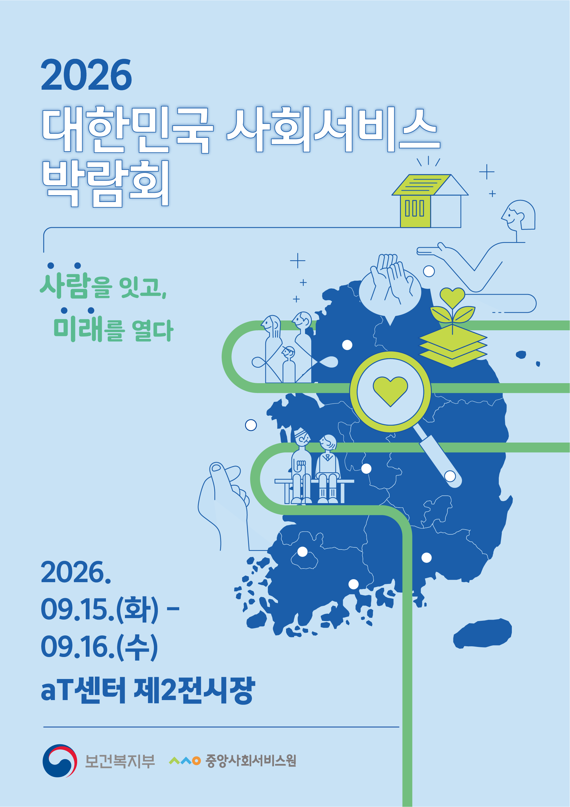

대한민국 사회서비스 박람회란?
행사명
2026년 대한민국 사회서비스 박람회
일정
2026. 9. 15.(화)~9. 16.(수)
장소
양재 aT센터 제2 전시장(3층)
주제
사회서비스 20년의 발자취, 함께 만든 변화와 미래
참석자
정부·지자체, 서비스 제공기관, 전문가, 일반 국민 등 약 3,000명
행사구성
개막식, 시상식, 부대행사, 홍보부스 운영 등
주최·주관
보건복지부, 중앙사회서비스원